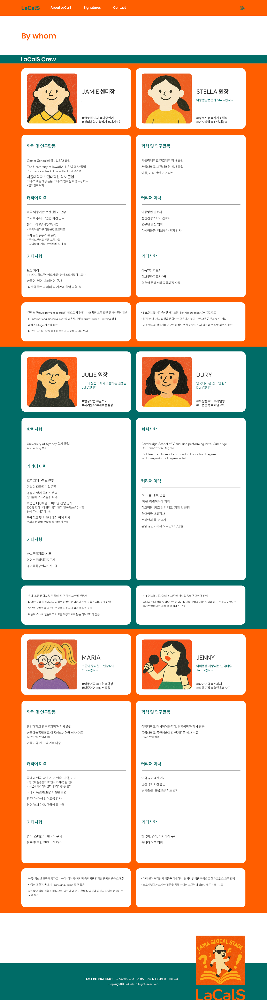
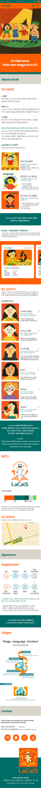
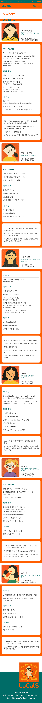
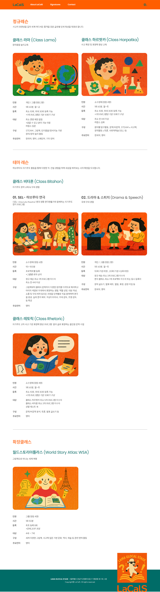
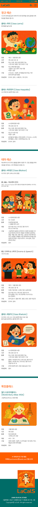
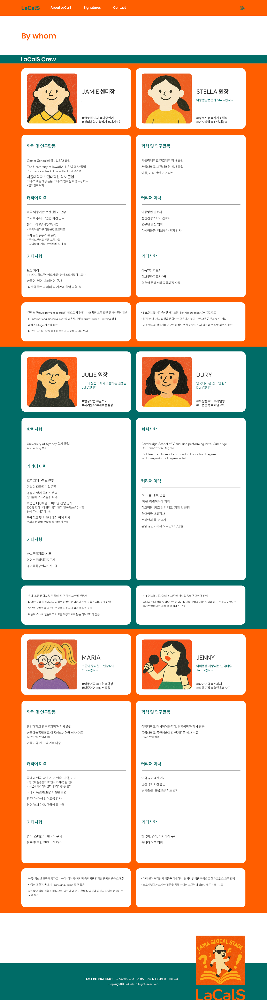
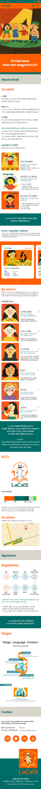
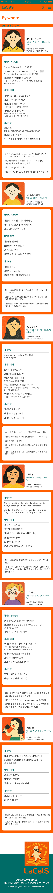
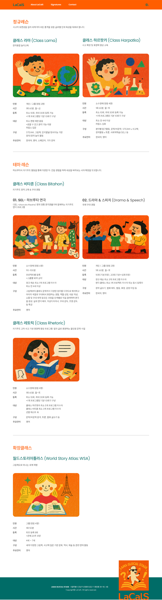
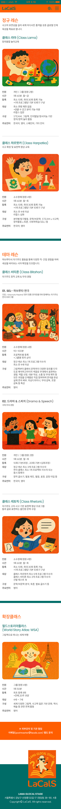

추후 맥북에 동기화
eng 하위 old_2025 폴더만 살리고 재업로드 ---> 추후 맥북에 동기화
-->
LaCalS
해야할 일
- About Lacals -> About LaCals (완료)
- lacals의 교육철학 > language 이미지 글자를 오른쪽 정렬 (완료)
- Lama · Harpatka · Bitahon의 하단 레슨 패널 자세히 보기 클릭시 -> 전체 클릭시 마우스 포인터 변경 (완료)
- Lama · Harpatka · Bitahon의 하단 레슨 패널 클릭시 팝업아래의 링크에서 Launch fullscreen modal 사용할 예정예시
- Lama · Harpatka · Bitahon의 하단 레슨 패널 관련 애니메이션 효과
- LacalS Crew 에서 Jamie 대표, Stella 공동대표 수정 (완료)
- LacalS Crew 에서 Crew 클릭시 PC는 클릭한 Crew에 따라 상세정보가 뜨고, 모바일은 하나씩만 보이도록 (완료)
- LacalS Crew 에서 Crew 클릭시 배경색 변경 (완료)
- LacalS Crew 에서 PC버전에 해당하는 정보, 모바일에 해당하는 정보 다르게 수정(ex: 태그, 인삿말 등) (완료)
- At Where 에서 지하철, 버스 이용시 등에 해당하는 아이콘 및 내용 넣기 (완료)
- TOP 버튼 추가 및 모바일 메뉴바 fixed 변경
- About LaCalS의 클래스 자세히 보기를 Signatures의 가장 최하단(Stages 이후)밑으로 이동 (완료)
디자인 전체↓
 
